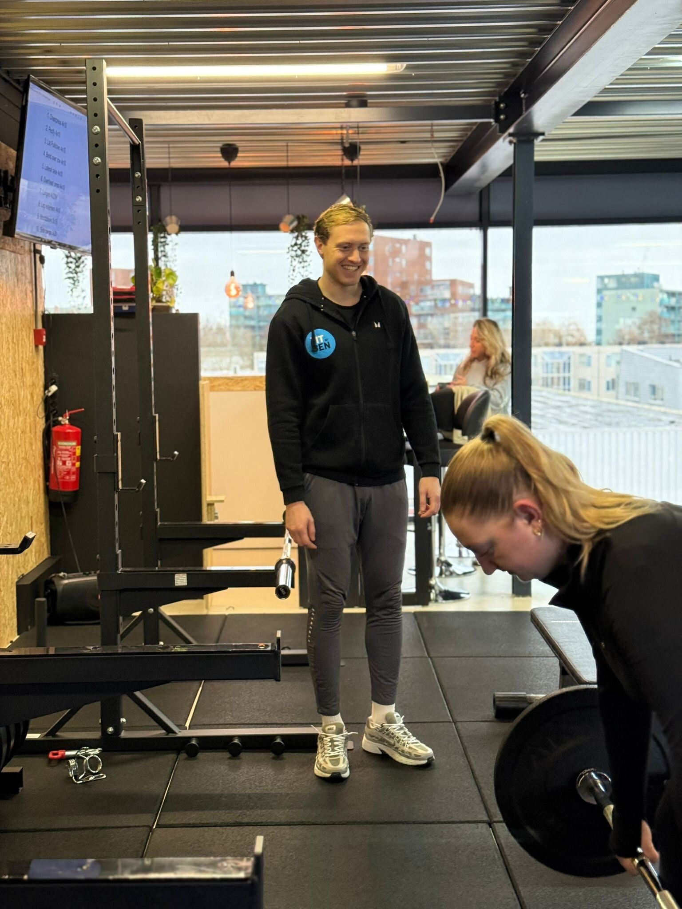

Een personal trainer in Leiderdorp die je écht kent: je doel, je niveau, je blessures en je agenda.
Bij Fit Up krijg je 1-op-1 begeleiding en een plan op maat. Geen standaardschema — wel een coach die naast je staat.
1-op-1 coaching is de snelste route naar resultaat. Voor wie maximale begeleiding en maatwerk wil.
De drempels van zelfstandig trainen — en hoe een vaste coach ze wegneemt.
Vier stappen waarin je coach je van begin tot doel begeleidt.
Train 1-op-1 met een ervaren personal trainer aan de Weversbaan 9.
Centraal in Leiderdorp, goed bereikbaar vanuit Leiden, Oegstgeest en Voorschoten, met gratis parkeren voor de deur.
Bekijk ook ons volledige Personal Training aanbod in Leiderdorp.

Plan een gratis intake en ontmoet je personal trainer. We bespreken je doel en kijken eerlijk of 1-op-1 coaching bij je past.